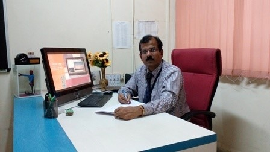

Sanjivani College Of Engineering, Kopargaon |
Home |
Departments |
Placements |
About Us |
Gallery |
Contact |
|---|
For any revolution to make an impact, Computer Engineering holds the key. The Department of Computer Engineering was established in the year 1989-90 and has qualified and experienced staff. The PG Programme in ME [Computer Engineering] is started from academic year 2011-2012. Department is accredited by NBA in Year 2003, 2008, 2015 and 2020 as well Accredited by Institute of Engineers, India in Year 2015. Department is having all the leading edge softwares and hardwares in its state-of-the- art laboratories, because we believe that it will be here from where global professionals will be created!!
Total 300 Computers along with a well-equipped project lab have been set up exclusively for final year students for their project work. Department is providing SAP global certification having separate SAP Training lab with necessary software. System Department is looking after the centralized computing facilities having Computer Center consisting of 120 nodes with dedicated 100 mbps leased line connectivity and separate 25 mbps leased line connectivity exclusively for Wi-Fi campus. Under Train n Hire programme, Department Faculty is providine training on Web Technology and PHP to shortlisted students by Xento Systems, Pune every year.
To complement and make the curriculum more interesting, competitive and practical, lot of co-curricular activities are organized and conducted. The Department has formed an Association of Computer Engineering Students (ACES) and established the student chapters of professional bodies like IEEE and CSI. From time to time, these professional bodies, organize various events such as State Level Software Contest, State and National level paper presentation contest, Project Competitions & Workshops on Embedded Systems, leading technologies like AI and Machine Learning, Data Mining and Cloud Technology, Software Testing, Cyber Security, Java Technology, IOT and Data Analytics etc.
We are conducting short term courses and seminars on Advanced C, C++, VB and Oracle, VC++, JAVA Technology, Python, PC Troubleshooting and maintenance, design patterns and extreme programming. The department has its own library consisting of around 527 books and manuals based on latest technology.
It gives me an immense pleasure to express my views towards the development of Computer Engineering Department. Besides a very strong and disciplined Academics, Department has started various practices for the overall development of students which includes SPEAK and Coding Club for enhancing the Employability Skills, , RID Forum for the Project development based on innovative ideas, Software Consultancy Cell for software development , Mentorship activities and regular Alumni interaction with students.
Students are having enormous talents and creativity which are being explored by extra co-curricular activities like Group Discussion, debate, Extempore, Programming contests, project competition etc. organized under different professional bodies like IEEE, CSI as well Departmental association.
Every year we observe lots of achievements in both academics and extra-curricular activities. Throughout the year on behalf of professional bodies and department association, lots of activities are conducted. Many students participated in these activities and the activities outside the college and bagged number of prizes. Hearty congratulations to all of them!!!
Lastly I congratulate the creative and sincere efforts taken by my faculty members and students for the achievement of Computer Department and I wish all of them a great success in their bright future…
